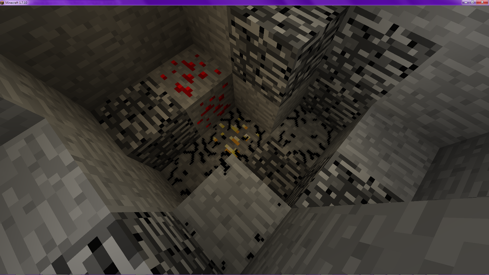

Overview
Void Monster adds a creature to the void, one which is effectively a manifestation of raw evil and warped reality. Even with it trapped beneath the bedrock, as it usually is, you will unavoidably be aware of its presence, by way of the sounds of its pursuit and the corrupting effect it has on space immediately around it. This adds a whole new layer of ominousness and foreboding to the deep caves, and makes mining much more unsettling.

Something lurks below the rock...
This mod was intended primarily as an ambiance mod, so barring interventions from other mods, that is where its effects end. However, should you find a passage into the void - or it find the reverse - the creature will pursue you with the sole intent of your destruction.
In direct combat, the monster is a dangerous foe; it can rapidly sap your health, as well as any protective spells or armors it must go through first - a few seconds will kill even the strongest of players - and if hurt, it will periodically heal itself, during which it is immune to attack. When attacked, it will also charge you, attempting to steal some of your health for its own.
Being a manifestation of a corruption of the fabric of reality itself, the monster will play havoc with your perception; as it approaches, it will leach the color from your vision, and when closer still it will even warp geometry. Upon contact, it will rob you of your sight entirely, at least for a time. Inanimate objects are often not safe either; to give itself an edge in battle, the monster will eat many nearby light sources, causing them to drop as blocks, and if trapped it can simply destroy its enclosure.
Rewards
Killing the monster will start a timer to spawn a new one in the void, will provide a large amount of experience, and drop number of useful items, including:- Diamond (2-8)
- Fortune III Enchanted Book (1)
- Infinity I Enchanted Book (1)
- Protection IV Enchanted Book (1)
- Ghast Tear (1)
- Glistering Melon (2-5)
- Emerald (2-6)
- Ender Pearl (1-3)
- Eye Of Ender (1-3)
- Fire Charge (2-8)
- Nether Wart (8-22)
- Nether Star (1-2)
- Obsidian (6-16)
- Gunpowder (8-12)
Configuration
The mod contains a config that allows you to blacklist dimensions from the spawn rules. This is intended to stop spawns in void-type MystCraft ages, and will not have any effect if you blacklist the Overworld, the Nether, or Extra Utilities' Deep Dark.Custom drops can also be specified using the LuaBlock system, specified in a special file in the config directory.